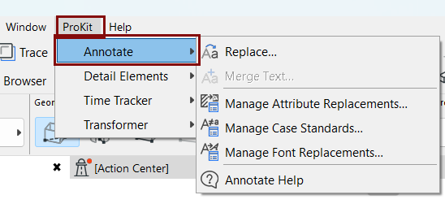
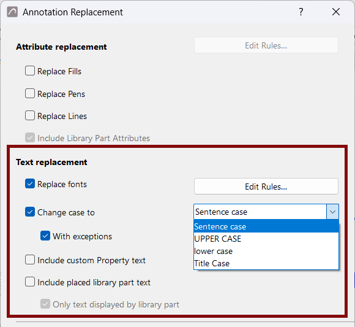
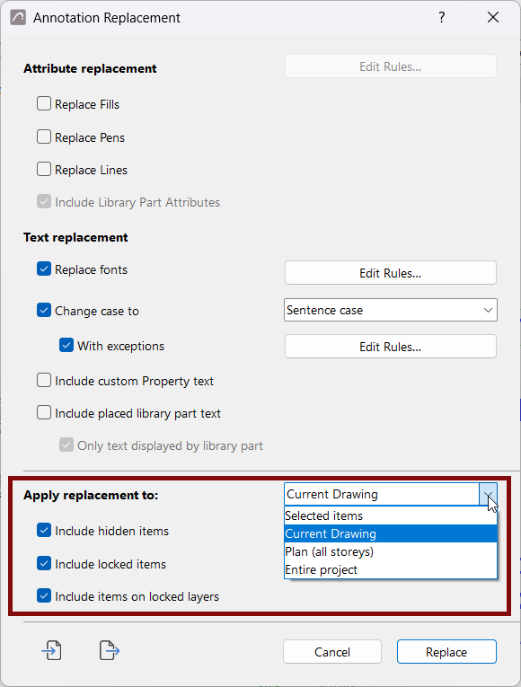
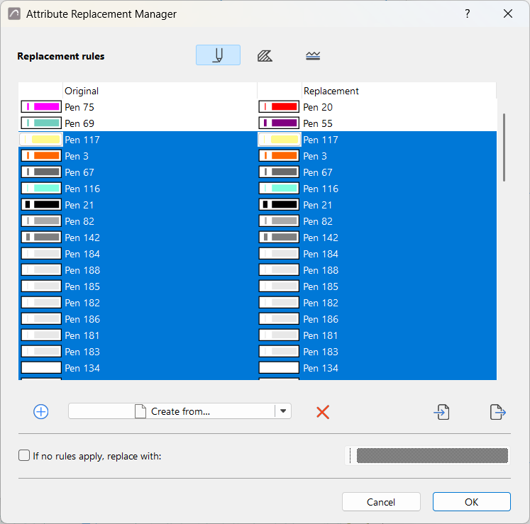
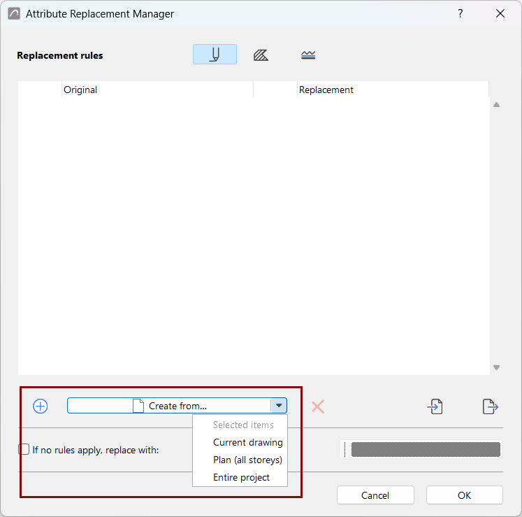
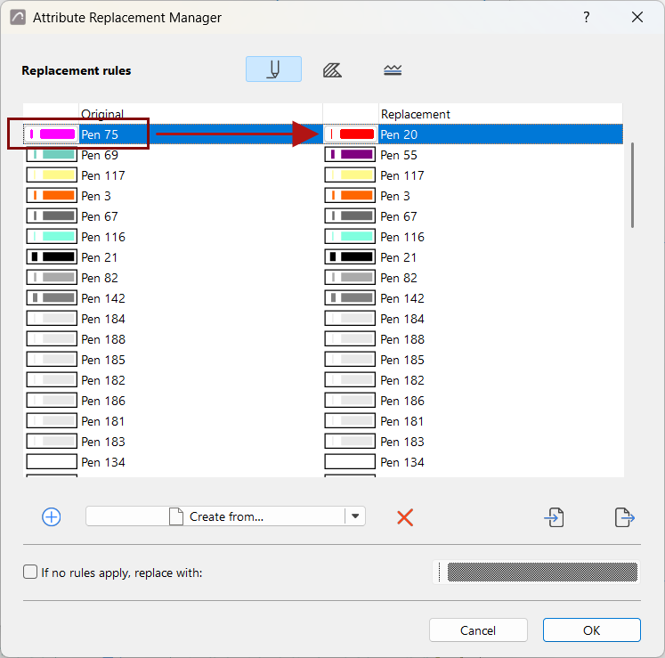
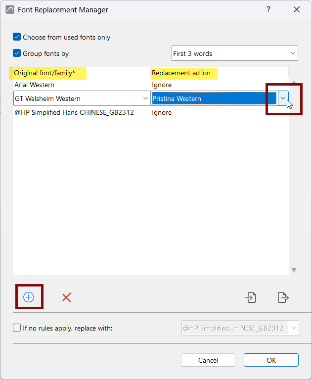
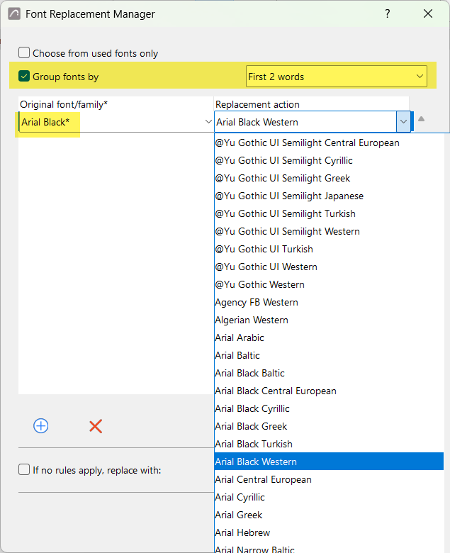
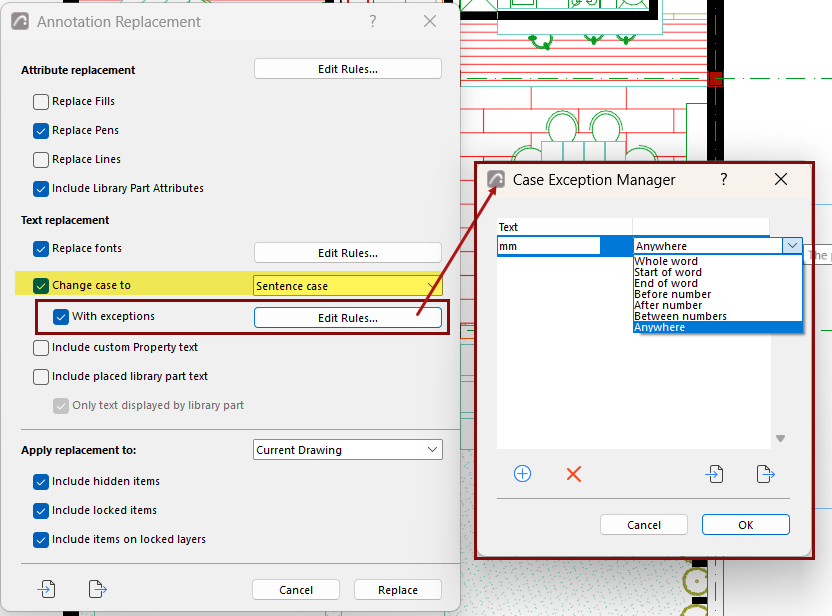

1. Annotate 是什么：一次定规则，批量改全项目
1. What Annotate Does: Rules Once, Applied Project-wide
Annotate 用来批量替换注释属性与文字格式，不必逐个元素修改。规则只定义一次，可应用到当前视图、选区、整个平面图或整个项目。
典型用途是标准清理：把项目拉回公司模板，或规范从其他软件转进来的图纸。

Annotate 菜单：Replace 与三个规则管理器" loading="lazy">能改什么
- 属性：填充、画笔、线型，可选择是否包含图库部件使用的属性
- 字体：单个字体，或一次替换整个字族
- 大小写：全项目统一一种大小写标准，并可定义例外（单位、缩写、专有名词）
三步工作流
- 在对应管理器里定义规则：属性替换、字体替换、大小写例外；规则随项目保存，可导出复用。
- 打开 ProKit > Annotate > Replace，勾选要执行的替换类型与作用范围。
- 点 Replace 执行；建议先在当前视图或选区试跑，确认结果再扩大范围。
一次替换可能影响很大范围，所以官方明确建议：先小范围试，再全项目跑。
Annotate batch-replaces annotation attributes and text formatting. Instead of editing elements one at a time, you define rules once and apply them to the current view, a selection, a plan, or the whole project.
Typical use is standards cleanup: bringing a project in line with an office template, or normalizing drawings that originated outside Archicad.
What you can change
- Attributes: fills, pens, line types, optionally including attributes used by library parts
- Fonts: individual fonts, or a whole font family at once
- Case: one case standard for the project, with exceptions for units, abbreviations and proper nouns
Three-step workflow
- Define rules in the relevant manager: attributes, fonts, or case exceptions. Rules are stored with the project and can be exported for reuse.
- Open ProKit > Annotate > Replace, enable the replacement types and choose the scope.
- Click Replace. Run it on the current view or a selection first, verify, then widen the scope.
A replacement can affect large parts of a project at once, so the official guidance is: test small, then go project-wide.
2. Replace 对话框：五类替换与作用范围
2. The Replace Dialog: Five Replacement Types and Scope
入口 ProKit > Annotate > Replace。对话框只执行已勾选的替换类型；规则本身在三个管理器中定义，通过 Edit Rules 进入。
属性替换
- 勾选 Replace Fills / Replace Pens / Replace Lines 决定执行哪类属性规则。
- Include Library Part Attributes：同时替换图库部件引用的属性，例如对象 2D 符号里的填充和画笔。

文字替换
- Replace fonts：执行字体管理器中的规则。
- Change case to：Sentence case / UPPER CASE / lower case / Title Case 四种标准。
- With exceptions：保留特定字符串的大小写，规则来自大小写例外管理器。
- Include custom Property text：同时替换自定义属性的文本值。
- Include placed library part text：同时替换图库部件的字符串参数。
- Only text displayed by library part：只处理 2D 中实际显示的字符串，避免误改内部参数。
作用范围
- Selected items / Current Drawing / Plan (all stories) / Entire project。
- 还可勾选 Include hidden items、Include locked items、Include items on locked layers。
- 点 Replace 执行，必要时可以直接 Undo。
- 左下角导入 / 导出整套规则，文件扩展名
.conversion；导入为追加，不覆盖现有规则。

Open with ProKit > Annotate > Replace. Only enabled replacement types run; the rules themselves live in the three managers, reached via Edit Rules.
Attribute replacement
- Check Replace Fills / Replace Pens / Replace Lines to run those attribute rules.
- Include Library Part Attributes also replaces attributes referenced by placed library parts, such as fills and pens in an object's 2D symbol.
Text replacement
- Replace fonts applies the rules in the Font Replacement Manager.
- Change case to: Sentence case, UPPER CASE, lower case or Title Case.
- With exceptions preserves specific strings, using rules from the Case Exception Manager.
- Include custom Property text also replaces custom property text values.
- Include placed library part text also replaces string parameters of placed library parts.
- Only text displayed by library part only touches strings shown in 2D.
Apply replacement to
- Selected items / Current Drawing / Plan (all stories) / Entire project.
- Optionally include hidden items, locked items, and items on locked layers.
- Click Replace; the action can be undone if needed.
- Import or export the whole rule set at bottom left; the file extension is
.conversion. Imported rules are appended.
3. 属性替换管理器：画笔、填充、线型逐条映射
3. Attribute Replacement Manager: Map Pens, Fills and Lines
入口：ProKit > Annotate > Manage Attribute Replacements，或在 Replace 对话框里点属性替换旁的 Edit Rules。
规则随项目保存。定义规则本身不会改动模型，只有点 Replace 才执行。

建立规则
- 点 + 新增一条空规则。
- 点 Create from 从项目已使用的属性自动生成规则，可选 Selected items / Current drawing / Plan / Entire project。
- 每条规则是一对一：Original 选原属性，Replacement 选替换后的属性。例如 Pen 75 → Pen 20。

兜底与导入导出
- If no rules apply, replace with：未命中任何规则的同类属性统一替换为指定属性；只想执行逐条规则时不要勾。
- 导入 / 导出扩展名：填充
.convertfill、线型.convertline、画笔.convertpen。 - 导入的规则追加到当前列表；可在 Replace 对话框把全部规则导出为单个文件。

Open via ProKit > Annotate > Manage Attribute Replacements, or click Edit Rules next to attribute replacement in the Replace dialog.
Rules are stored with the project. Defining a rule changes nothing by itself; the replacement runs only when you click Replace.
Add rules
- Click + to add one empty rule.
- Click Create from to generate rules from attributes already in use, scoped to selected items, current drawing, plan, or entire project.
- Each rule is one-to-one: choose the Original and Replacement attribute, e.g. Pen 75 → Pen 20.
Catch-all and files
- If no rules apply, replace with defines a catch-all for unmapped attributes. Leave it off to apply only explicit rules.
- Import/export extensions:
.convertfill,.convertline,.convertpen. - Imported rules are appended; the Replace dialog can export all rules into a single file.
4. 字体替换管理器：清理近重复字体
4. Font Replacement Manager: Clean Up Near-duplicate Fonts
外部来的文件常带着大量近重复字体，字体替换管理器就是用来一次性收拾它们的。
入口：ProKit > Annotate > Manage Font Replacements，或在 Replace 对话框 Replace fonts 旁点 Edit Rules。

定义字体规则
- 点 + 新增规则，填写 Original font/family 与 Replacement action。
- Replacement action 可选 Ignore（保持不动）或指定替换字体。
- Choose from used fonts only：原字体列表只显示项目实际用到的字体。
- Group fonts by：按字体名的 First word / First 2 words / First 3 words 分组；带星号的条目表示整个字族。

兜底与限制
- If no rules apply, replace with 可设置未命中字体的统一替换；只跑逐条规则时不要勾。
- 导入 / 导出使用
.convertfont，导入为追加。 - 字体替换不一定影响所有图库部件，取决于部件的参数定义方式。
- 同样可以在 Replace 对话框把全部注释替换规则导出为单个文件。
Files received from outside the office accumulate near-duplicate fonts. This manager cleans them up in one pass.
Open via ProKit > Annotate > Manage Font Replacements, or Edit Rules next to Replace fonts.
Define font rules
- Click +, then fill Original font/family and Replacement action.
- Replacement action is either Ignore or a specific font.
- Choose from used fonts only limits the list to fonts actually used in the project.
- Group fonts by first word, first 2 words, or first 3 words; an asterisk marks a family entry.
Catch-all and caveats
- If no rules apply, replace with sets a catch-all for unmapped fonts. Leave it off for explicit rules only.
- Import/export uses
.convertfont; imports are appended. - Font replacement may not affect all library parts, depending on how their parameters are defined.
- All annotation replacement rules can also be exported as one file from the Replace dialog.
5. 大小写例外管理器：让 mm、NZ、100x200 保持原样
5. Case Exception Manager: Keep mm, NZ and 100x200 Intact
大小写例外定义一批不参与统一大小写的词、缩写或字符序列。
入口：ProKit > Annotate > Manage Case Standards；或在 Replace 对话框勾选 With exceptions 后点 Edit Rules。

上下文类型
- Whole word：整词匹配
- Start of word / End of word：词首 / 词尾
- Before number / After number：紧邻数字前 / 后
- Between numbers：夹在两个数字之间
- Anywhere：出现在任何位置都匹配；含
.、?等非字母数字字符时选它
三个例子
- 单位 mm 必须小写，又跟在数字后：上下文选 After number，避免误伤含双 m 的单词。
- 专有名词或国家代码 NZ 整体保留：上下文选 Whole word。
- 尺寸分隔符 x（100x200）夹在数字之间：上下文选 Between numbers。
列表管理
- + 新增、删除图标移除、导入 / 导出复用；例外列表随项目保存。
- 例外文件扩展名
.keycase；导入的规则追加到现有列表。 - 点 OK 保存，Cancel 放弃。
Case exceptions define words, abbreviations and character sequences that keep their own capitalization.
Open via ProKit > Annotate > Manage Case Standards, or check With exceptions in the Replace dialog and click Edit Rules.
Context types
- Whole word
- Start of word / End of word
- Before number / After number
- Between numbers
- Anywhere — use it for expressions containing non-alphanumeric characters such as
.or?
Three examples
- Unit mm stays lower case and follows a number: use After number to avoid corrupting words with a double m.
- A proper noun or country code such as NZ: use Whole word.
- A dimension separator x in 100x200 occurs between numbers: use Between numbers.
Managing the list
- + adds, the delete icon removes, and import/export reuses the list; it is stored with the project.
- Exception files use
.keycase; imported rules are appended. - OK keeps changes, Cancel discards them.